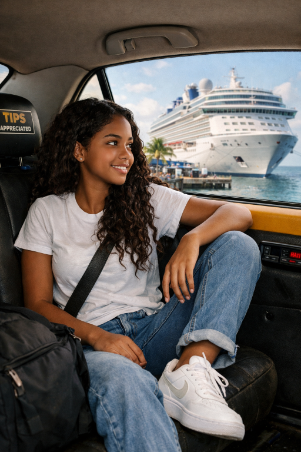
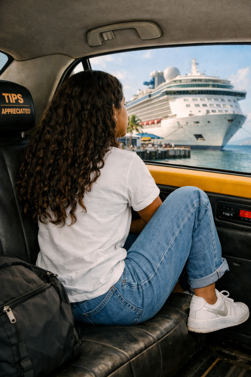

| The taxi rolled to a stop at the edge of the docks, and Brooklyn felt her breath catch. The cruise ship wasn’t just big — it was massive, a floating city rising out of the water like a white‑walled giant. Its hull gleamed under the late‑afternoon sun, and the name painted across the side shimmered in gold lettering. People streamed up the gangway in a steady flow, dragging suitcases, laughing, taking photos. None of them knew she was running. None of them knew she was choosing her future. Brooklyn stepped out of the taxi, the warm ocean wind hitting her face immediately. It carried the smell of salt, sunscreen, and something metallic from the ship’s engines. Her hair whipped around her shoulders as she paid the driver, her hands still shaking from the sprint out the back door. Behind her, the city hummed — traffic, voices, distant sirens. She didn’t look back. She walked toward the ship, each step feeling heavier and lighter at the same time. The closer she got, the more the world around her seemed to stretch out: the creaking ropes tied to the dock, the low rumble of the engines preparing to depart, the echo of seagulls circling overhead. A security officer scanned her ticket. “First time cruising?” he asked casually. Brooklyn forced a smile. “Something like that.” |  |

He waved her through.
As she stepped onto the gangway, the metal beneath her feet vibrated with the ship’s heartbeat.
The ocean below sloshed softly against the supports, dark and deep.
She gripped the railing, steadying herself, feeling the weight of the decision waiting for her on the other side.
Inside the ship, everything felt unreal — polished floors, bright lights, the distant sound of a band warming up somewhere
on the upper deck. Families rushed past her, excited and loud. Couples posed for photos.
Crew members in crisp uniforms greeted passengers with practiced smiles.
Brooklyn moved slowly, absorbing it all.
This wasn’t just a getaway.
It was a doorway.
At the centre of the lobby, a giant digital board flickered with the ship’s two major routes:
|
|